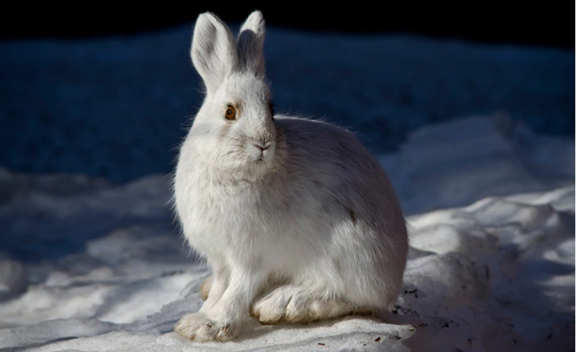
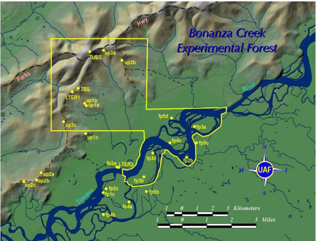

The data was collected from 1998 - 2012 at the Bonanza Creek Experimental Forest inside of the Bonanza Creek LTER just outside Fairbanks, Alaska [3]. Snowshoe hares (Lepus americanus) are a well documented species that observe a 10 year cycle of population growth and decline [1,2]. This data set will examine to see whether this population of snowshoe hares in the Bonanza Creek LTER also observe a similar 10 year trend. We will explore the weight of both male and females inside of the population to see if there are trends that overlap with the ten year cycle of reproduction.


Pictures of a Snowshoe Hare and the study area.
Figure 1: Displays the annual count and average weight in both male and female snowshoe hares from the Bonanza Creek LTER from 1998 to 2012. 3380 observations were collected over the course of the study but only 2987 are depicted on the graph. Data not included contains individuals that were captured whose sex was not recorded or was unknown.
Discussion:
The findings of this survey show a consistent trend that has been documented in previous studies (O’Donoghue, M. & Krebs, 1992; Belovsky, 1984) where snowshoe hares operate on a ten year population cycle. The population crashed in 2002 from a high in 1999, it then reached a new high in 2009 before crashing in 2012 again. Both genders follow this trend across years. While males have a relatively consistent weight, the females have a low mean weight in 2002, which may indicate a reason for why the population crashed. Lower physical health, interpreted by birth weight, may have resulted in lower birth rates. As female weights rebounded, the counts of snowshoe hares also increased, indicating that the health of female hares may be critical to maintaining snowshoe hare populations.
The table above shows the mean weight of all snowshoe hares in the Bonanza Creek LTER from 1998 - 2012 by year. The population in 1998 had the largest mean weight, and declined to its lowest point in 2002, this also corresponds with the ten year cycle that was documented earlier. By 2004, the population had reached a rough equilibrium of mean weight, oscilating between roughly 1350g and 1450g annually. The variance in the population is also extremely high indicating that it may be difficult to extrapolate too much from the results of this study with respect to body weight.1)O’Donoghue, M. & Krebs, C. J. Effects of Supplemental Food on Snowshoe Hare Reproduction and Juvenile Growth at a Cyclic Population Peak. Journal of Animal Ecology 61, 631–641 (1992).
2)Belovsky, G. E. Snowshoe hare optimal foraging and its implications for population dynamics. Theoretical Population Biology 25, 235–264 (1984).
3)Kielland, K., Chapin, F. S., Ruess, R. W. & Bonanza Creek LTER. Snowshoe hare physical data in Bonanza Creek Experimental Forest: 1999-Present. (2017) doi:10.6073/PASTA/03DCE4856D79B91557D8E6CE2CBCDC14.